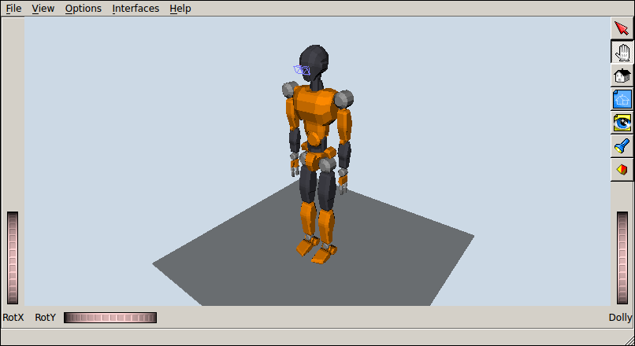
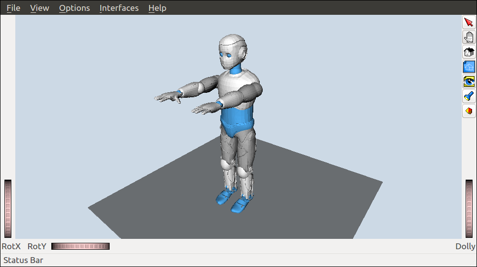

OpenRAVE robot models can be written in OpenRAVE Custom XML Format, if you write them from scratch, but are most of the time written in the COLLADA 1.5 Robot Extensions. This format is not so widely used and converting to it can be tricky. In this post, we will review the conversion paths I've found to generate the humanoid robot models in the openrave_models repository.
From VRML to COLLADA 1.5¶
The JVRC-1 model, similarly to robot models
from the HRP series, is provided in VRML format. To convert it to COLLADA, you
can use the openhrp-export-collada script provided in OpenHRP 3. After the regular CMake build
process, you will find it in the bin folder of your build directory:
cd <openhrp3-folder> ./build/bin/openhrp-export-collada -i main.wrl -o JVRC-1.dae
Textures are not converted in this process. To palliate this, you can open the COLLADA file in a text editor (COLLADA is still XML so it can be read and edited by human beings) and change link colors by hand. You can check out JVRC-1.dae to see how this is done.

More recently, the authors of OpenHRP have also developed simtrans which is a more general set of conversion scripts.
From URDF to COLLADA 1.5¶
Many robot models are provided in another XML dialect called Unified Robot
Description Format (URDF). This was the case for instance with the Romeo model. To convert it to
COLLADA, you can use the urdf_to_collada tool provided in collada_urdf. After the package is installed in your
ROS distribution, run:
rosrun collada_urdf urdf_to_collada romeo.urdf Romeo.dae
Textures are not converted in this process. To palliate this, you can open the COLLADA file in a text editor (COLLADA is still XML so it can be read and edited by human beings) and change link colors by hand. You can check out Romeo.dae to see how this is done.

For a more recent tool, the simtrans conversion scripts provide a less burdensome alternative
Discussion ¶
Feel free to post a comment by e-mail using the form below. Your e-mail address will not be disclosed.